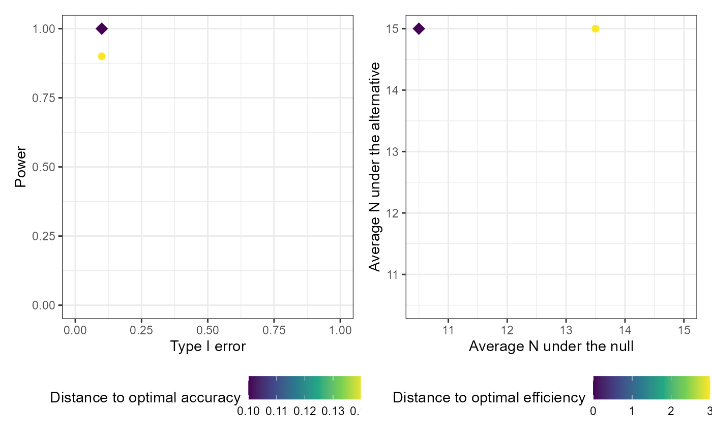

Plot method for calibrate_thresholds objects
plot.calibrate_thresholds.RdReturns two interactive plotly plots (if plotly=TRUE)
or two static ggplot2 plots (if plotly=FALSE) to compare results
from various designs generated from a call to calibrate_thresholds
based on various criteria, and to assist in selecting an optimal design.
Arguments
- x
an object of class 'calibrate_thresholds', usually returned by the
calibrate_thresholdsfunction- type1_range
a vector specifying the minimum and maximum acceptable type I error. Specify c(0, 1) to return the full range of resulting type I error. Defaults to c(0, 1)
- minimum_power
a numeric between 0 and 1 specifying the minimum acceptable power. Specify 0 to return the full range of resulting power. Defaults to 0.
- plotly
a logical indicator of whether you want the plots returned as interactive plotly plots or non-interactive ggplots. Defaults to FALSE.
- ...
unused
Value
Plots of the average sample size under the null by the average
sample size under the alternative, and the type I error by the power for
designs meeting the specified type1_range and
minimum_power
Examples
# Setting S = 50 and nsim = 50 for speed
# In practice you would want a much larger sample and more simulations
set.seed(123)
# One-sample case
cal_tbl1 <- calibrate_thresholds(
p_null = 0.1,
p_alt = 0.4,
n = seq(5, 15, 5),
N = 15,
pp_threshold = c(0.85, 0.9),
ppp_threshold = c(0.1, 0.2),
S = 50,
nsim = 50
)
#> Joining, by = c("sim_num", "pp_threshold", "ppp_threshold")
plot(cal_tbl1, type1_range = c(0.01, 0.2), minimum_power = 0.7)
